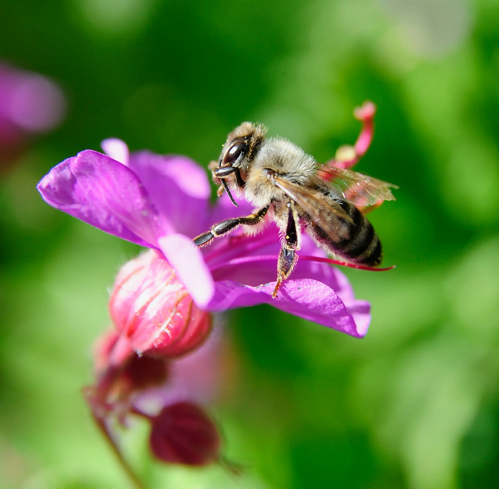

Last updated: 15 August 2026

Have you ever wondered about the role bees play in our wider environment? Most of us see them as nectar collectors, moving from flower to flower, but when you look a little closer, you quickly realise they are much more than that. Bees are part of a much bigger natural system, and their work supports plants, wildlife, food production and biodiversity.
I remember the first time I properly watched a thriving colony working across flowers. It was not just the sound that caught my attention, but the organisation. Every bee seemed to have a purpose. They moved between blossoms with incredible focus, each one playing a small part in something much larger.
Bees are Vital Pollinators
As bees visit flowers to collect nectar and pollen, they transfer pollen from one flower to another. This allows many plants to produce fruit, seed and future growth. Without pollinators, many flowering plants would struggle to reproduce. Understanding the importance of pollination is one of the many reasons people become interested in beekeeping and bee conservation.
Beekeeping Can Encourage Biodiversity
Keeping bees has made me far more aware of what is flowering around me. Before I became a beekeeper, I probably walked past hedgerows, wildflowers and flowering trees without giving them much thought. Now I notice them all the time.
Beekeeping encourages you to think about forage, flowering periods and gaps in the season when nectar may be limited. This naturally leads to better choices in gardens, allotments and apiaries. Our Year in the Apiary guides explore how forage availability changes throughout the seasons and how colonies respond to those changes.
A Personal Connection with Nature
For me, beekeeping has created a much stronger connection with the natural world. Every inspection tells you something. You notice the weather, the forage, the strength of the colony, the condition of the brood, and whether the bees are calm, defensive, hungry or thriving. Regular inspections can also help identify potential hive problems before they develop into more serious issues.
You do not need to own a hive to help bees. Supporting local beekeepers, planting pollinator-friendly flowers, leaving some wild areas, providing water, and avoiding unnecessary chemicals can all make a difference. Learning more about bee health, forage and responsible beekeeping can help create a better environment for pollinators and other wildlife.
Every buzz matters. Whether you keep bees yourself or simply want to support pollinators, our collection of practical beekeeping advice and seasonal resources can help you learn more about the fascinating world of honey bees.
Join the Conversation
Beekeeping is all about learning from one another. Follow BeezKnees for more inspection notes, seasonal observations and practical beekeeping tips.